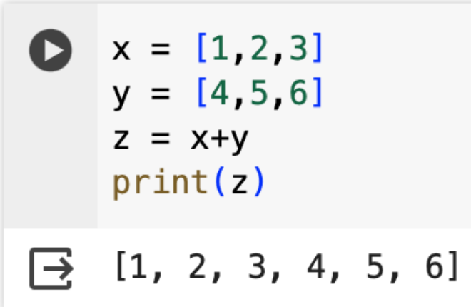
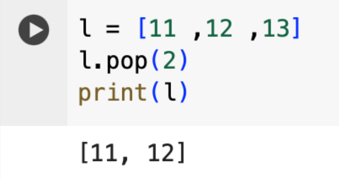
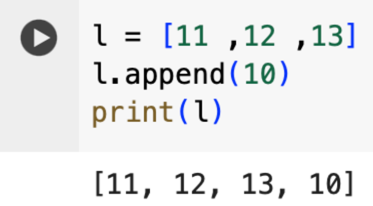
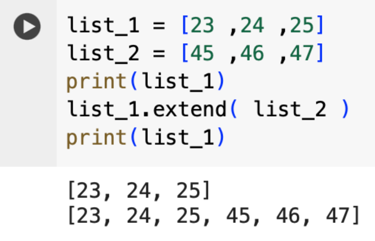
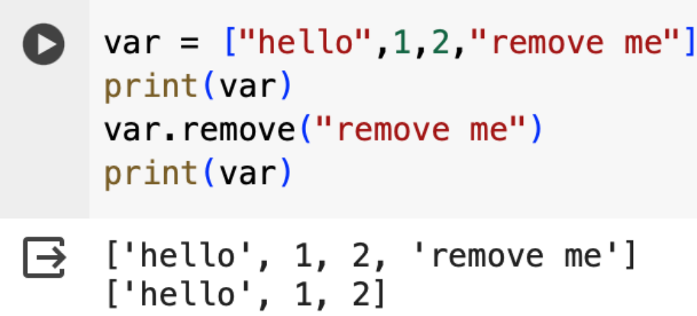
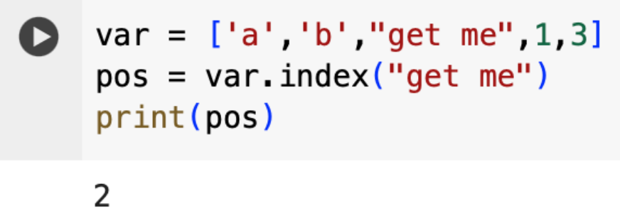
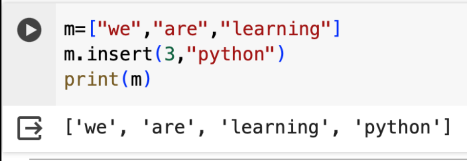
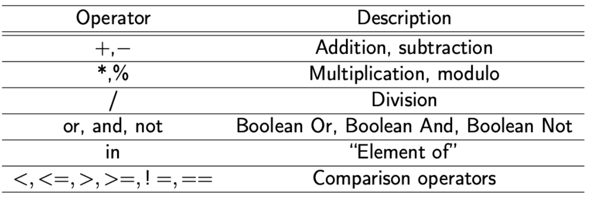
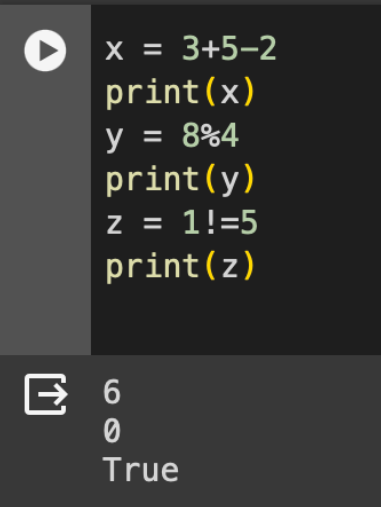

Fungsi ini digunakan untuk menggabungkan dua sequence (bisa berupa listataupun string) menjadi satu.

Pada gambar berikut terdapat contoh penggabungan dua buah list.
Fungsi ini digunakan untuk memeriksa apakah elemen yang dimaksud ada dalam list. Gambar berikut menampilkan contoh implementasinya. Nilai True menandakan bahwa element yang dimaksud ada di dalam list dan nilai False menandakan bahwa element yang dimaksud tidak ada dalam list

Fungsi POP digunakan untuk mengambil elemen pada indeks tertentu dari sebuah list. Gambar berikut menunjukkan contoh implementasinya
Fungsi append digunakan untuk menambahkan elemen baru ke dalam sebuah list. Gambar berikut menunjukkan contoh implementasinya.
Fungsi Extend digunakan untuk menambahkan lebih dari satu elemen baru pada sebuah list. Gambar berikut menunjukkan contoh implementasinya.
Fungsi ini digunakan untuk menghapus suatu elemen dari sebuah list. Gambar berikut memperlihatkan contoh implementasinya.
Fungsi ini digunakan untuk menampilkan indeks dari sebuah element di dalam list. Gambar berikut menunjukkan contoh implementasinya.
Fungsi ini digunakan untuk menyisipkan elemen baru pada sebuah list. Perbedaan fungsi Insert dengan Append adalah fungsi Append akan menambahkan elemen baru di indeks paling terakhir, sedangkan fungsi Insert bisa menambahkan elemen baru di indeks manapun yang dituju. Berikut contoh gambar dari implementasinya.
Gambar berikut menunjukkan arithmetic dan comparison operators pada Bahasa Python
Gambar berikut menunjukkan operator-operator yang ada di Python
